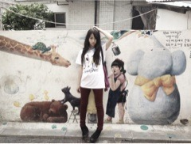

| 2012/08 24 Fri | 214回目*marika |
いつも読んでくださってる方、
初めて読んでくださった方、
コメントしてくださった方、
ありがとうございます。
今日はリハーサルでした

**********
 和食と洋食どちらが好きですか？
和食と洋食どちらが好きですか？
 選べないーー
選べないーー
 私の学校で、あるイベントがあって
私の学校で、あるイベントがあって
Bicycle踊ることになったのですが、
オーディションにうからないと
いけないんです!!
応援していただけませんか？
それ、めっちゃ嬉しいっっっ

頑張ってください‼
私も見たい

井上真央に似てるって
言われへん？
乃木坂のオーディションの時から
言われること多くなりました><
「走れ！Bicycle」は何て
略せばいいのかな？
バイシクルって言ってるなぁ私。
はしバイ、チャリ走、はしチャリ...
いっぱいあるね‼
悩む時ゎとことん悩むタイプ？
うん...けっこう引きずる方かな
 一番好きな色ってなに？
全部すき‼
一番好きな色ってなに？
全部すき‼
赤ピンク紫ターコイズカーキ黄緑白黒
いっぱいでしょ？
**********
サポティスタさんに
まいまい、若月と一緒に
取材を受けてます^^
熱く語ってる写真が載ってます

ぶらり旅

まりか
コメント(83)
2012/08/24 23:30